Lecture 14: The Data Pipeline
Video blocked (ad-blocker or local file mode).
Watch on YouTubeVideo not loading? Watch on YouTube
Original lecture. Percy Liang on transforming, filtering, deduping, mixing, and synthesizing data.
The problem: raw crawl is not training data
Lecture 13 covered where data comes from. This is the pipeline that turns it into training tokens: transform, filter, dedupe, mix, then post-train. Raw data is not text. Common Crawl holds HTML (sometimes PDFs, sometimes repos). It is full of duplicates, boilerplate, and junk. Every stage below exists because training on the raw crawl directly fails in a specific, measurable way.
Transformation: linearization loses things
HTML-to-text is rule-based: strip boilerplate and navigation, extract content. Tables are the hard case: simple ones render as markdown, nested ones force approximation 01:51 ⏱01:51.
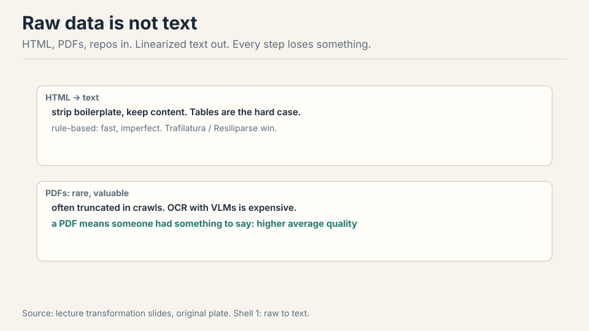
PDFs are a small fraction of the web and disproportionately valuable: making a PDF means having something to say. Many are truncated in crawls (they are big), and conversion often means OCR with a vision model, which is expensive 04:22 ⏱04:22. Work the tradeoff: a 200 pages PDF holds dense technical text worth keeping, but OCR at vision model cost per page means the extraction bill can exceed the training value of the tokens. Labs pay it anyway for the quality.
First attempt: filter for what you want
The general skeleton: a small target T of high-quality data, a huge raw pool R, and the goal of finding the subset of R that looks like T 06:56 ⏱06:56. Filtering must generalize (you already own T) and be fast (100 trillion tokens). You keep a single-digit fraction.
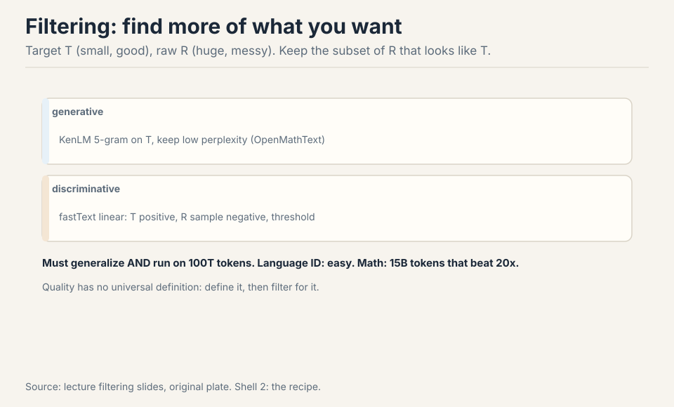
Two classifier types 09:02 ⏱09:02. Generative: fit a small model (KenLM 5-gram) on T, keep low perplexity. Discriminative: fastText linear classifier, T positive, R sample negative, threshold. Instantiations: Meta language ID (176 languages). OpenMathText (rules plus KenLM plus fastText, 15B tokens that beat 20x unfiltered data). GPT-3 (Wikipedia, WebText, books positive). phi-1 (GPT-4 labels 100k, distill to Random Forest) 11:31 ⏱11:31.
Quality has no universal definition. Define what you want (math), filter for it, get better at it 14:13 ⏱14:13.
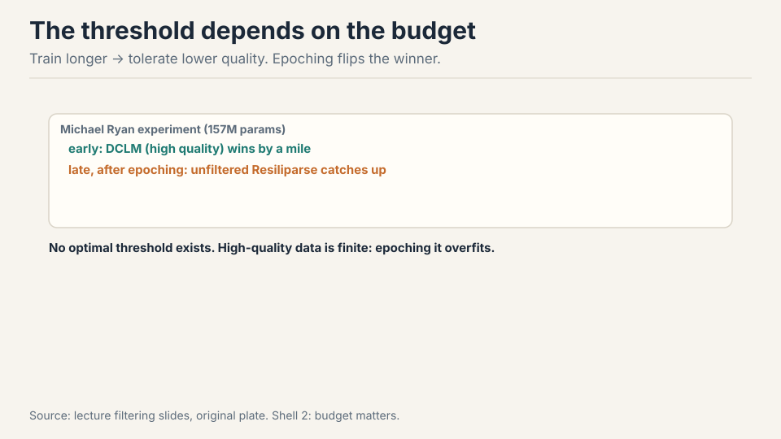
And there is no universal threshold either. The optimal bar depends on how many tokens you will train on. Michael Ryan’s experiment (157M params): DCLM’s high-quality data wins early, but once you start epoching the small high-quality pool, unfiltered Resiliparse catches up. Train longer, tolerate lower quality. The real mistake is not tuning the threshold: it is ignoring that your high-quality source is finite and epoching it silently.
There is none in the abstract. The optimal threshold depends on how many tokens you will train on. Michael Ryan’s experiment (157M params): DCLM’s high-quality data wins early, but once you start epoching the small high-quality pool, unfiltered Resiliparse catches up. Train longer, tolerate lower quality. The real mistake is not tuning the threshold: it is ignoring that your high-quality source is finite and epoching it silently. Because you run out. The 50-epoch trap: uniform mixing of 10T low-quality and 10B high-quality tokens, training 1T tokens, repeats every high-quality token 50 times. Best case you waste compute, worst case you overfit. UniMax caps epochs per source. Simulated epoching downsamples small runs so they feel large-scale scarcity. Always compute the implied epoch count before you pick a mixture.
Where raw data breaks: duplicates
Exact duplicates (mirrors, forks) and near duplicates (licenses, headers, templates differing by a comma). The web is weird: one gas mask description appeared 61,000 times in C4 25:49 ⏱25:49. Work the waste: 61,000 copies of one paragraph. The model pays to memorize it 61,000 times, and the memorized text is exactly the kind that raises copyright and privacy flags.
Why dedupe: efficiency, avoiding memorization of copyrighted or private text, and decontamination (test set out of training set) 26:17 ⏱26:17.
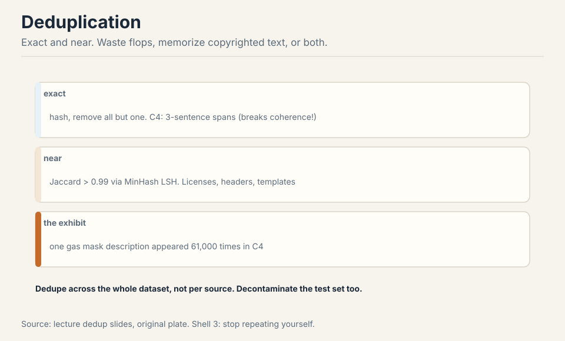
C4 did exact dedup on 3-sentence spans, removing all but one: which rips sentences out of documents and breaks coherence 30:30 ⏱30:30. Design space: item granularity (sentence, paragraph, document), match definition (exact, common subitem, Jaccard fraction), and what to remove. Dedupe across the entire dataset, not per source 48:55 ⏱48:55: the same boilerplate appears in every source.
Because the same junk appears in every source. The gas-mask paragraph lived in C4, in Common Crawl, in every scrape of the same pages. Per-source dedup removes the 61,000 copies inside C4 but leaves the copies in every other source untouched: the model still memorizes it. Global dedup hashes the entire corpus together: one bucket for the paragraph, one survivor. The cost: you must hold the whole corpus’s signatures at once, which is why MinHash LSH’s linear time matters. Per-source dedup is a local optimum that misses the global duplicates. Same mechanism, different target. Dedup removes training-training duplicates. Decontamination removes training-test duplicates: any training document matching an eval question is deleted. The reason is Lecture 12: a model tested on its training data is not being evaluated. The pipeline treats the eval sets as one more source to dedupe against. Skip this and your benchmark numbers are fiction.
The key question
Duplicates are not exact. Two documents can differ by a comma and still be the same text for training purposes. Pairwise comparison of billions of documents is O(n^2): impossible. What if similarity itself could be hashed, so near-duplicates collide in the same bucket? That is MinHash LSH.
MinHash LSH: similarity as hashing
Near-duplicate means Jaccard similarity above a threshold (say 0.99). Jaccard of two sets: size of intersection over size of union.
MinHash: hash every element of the set, keep the minimum. The key property: P(collision) = Jaccard(A, B). The intuition is a random permutation: the first row in the ordering decides, and it lands in the intersection exactly Jaccard of the time 33:58 ⏱33:58.
Work the toy. A = {1,2,3,4}, B = {3,4,5,6}. Intersection = {3,4}, union = {1,2,3,4,5,6}. Jaccard = 2/6 = 0.33. Permute randomly. The minimum element of the union decides. It is in the intersection with probability 2/6 = 0.33. The hash collision probability equals the similarity. That is the whole trick.
Subchapter: the MinHash toy, slowed down
Run the permutation argument twice. First permutation: 1,2,3,4,5,6. MinHash(A) = 1, MinHash(B) = 3. Different: no collision. Second permutation: 3,1,5,2,6,4. MinHash(A) = 3 (first element of A in this ordering), MinHash(B) = 3. Same: collision. The first element of the union’s ordering decides, and it lands in the intersection with probability |intersection|/|union| = 0.33.
One hash is one coin flip with bias 0.33: too noisy. Use 900 independent hashes: the fraction that collide concentrates at 0.33 by the law of large numbers. That fraction is the Jaccard estimate. The documents are sets of shingles (n-grams): two documents that differ by a comma share almost all shingles, so their Jaccard is near 1 and their MinHash signatures nearly always collide. The trick converts “similar documents” into “equal signatures,” and equal signatures hash to the same bucket: linear time.
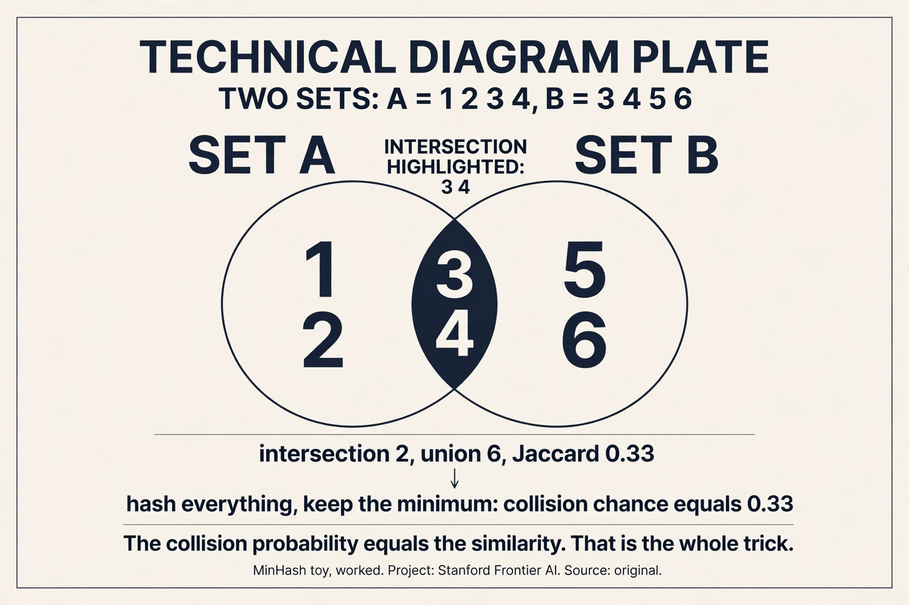
Shingle into 3-grams. X: {the cat sat, cat sat on, sat on the, on the mat}. Y: {the cat sat, cat sat on, sat on a, on a mat}. Intersection: 2 shingles. Union: 6. Jaccard = 2/6 = 0.33. Hash every shingle with 900 hash functions, keep the minimum per function: two 900-long signatures. About 33% of the positions collide. One comma changed two shingles out of six: the documents are near-duplicates by content but not by the numbers. Set the LSH threshold at 0.9 and these two do not collide: correctly, since “the” vs “a” is a real difference. Set it at 0.3 and they do. The threshold is the policy. Whole-document hashing only catches exact duplicates. Shingles catch near-duplicates: documents that differ by a comma, a license header, or a templated paragraph share most shingles. The shingle size is the resolution knob: 3-grams catch paraphrase-level similarity, 10-grams catch copy-paste. C4 used 3-sentence spans: coarser, faster, and it ripped sentences out of documents. The granularity is a design decision with visible consequences.
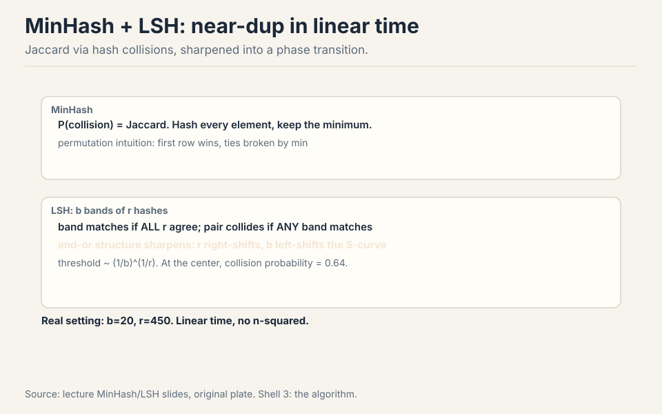
One hash is too stochastic, so LSH sharpens it. Split n hashes into b bands of r. A band matches if all r agree. The pair collides if any band matches. This and-or structure makes an S-curve: below the threshold collisions vanish, above it they approach certainty. Increasing r moves the curve right (stricter), increasing b moves it left (looser). The phase transition sits at (1/b)^(1/r), where the collision probability is 0.64 47:04 ⏱47:04. Real setting from the dedup literature: b=20, r=450. All linear time: hash everything once, bucket by bands, compare only within buckets.
Subchapter: tune the S-curve
The two knobs. More r per band: all r must agree, so a single disagreement kills the band. Stricter: the curve moves right, fewer false positives, more missed near-dups. More b bands: any band colliding suffices, so more chances. Looser: the curve moves left, fewer misses, more false positives.
Work the literature setting: b=20, r=450. Threshold = (1/20)^(1/450). ln(1/20) = -3.0, divided by 450 = -0.0067, exponentiated: 0.993. Pairs above 0.993 Jaccard collide with high probability; below, they vanish. That is aggressive: near-exact duplicates only. For aggressive paraphrase dedup you would lower r or raise b: b=100, r=50 gives threshold (1/100)^(1/50) = 0.912.
The decision rule: set the threshold at the similarity where you stop caring. Boilerplate licenses at 0.99: threshold 0.993 keeps them colliding (they are the same text). Paraphrased articles at 0.8: threshold 0.993 misses them, which is correct if paraphrase is legitimate diversity. The S-curve is not a free parameter: it encodes your definition of “duplicate.”
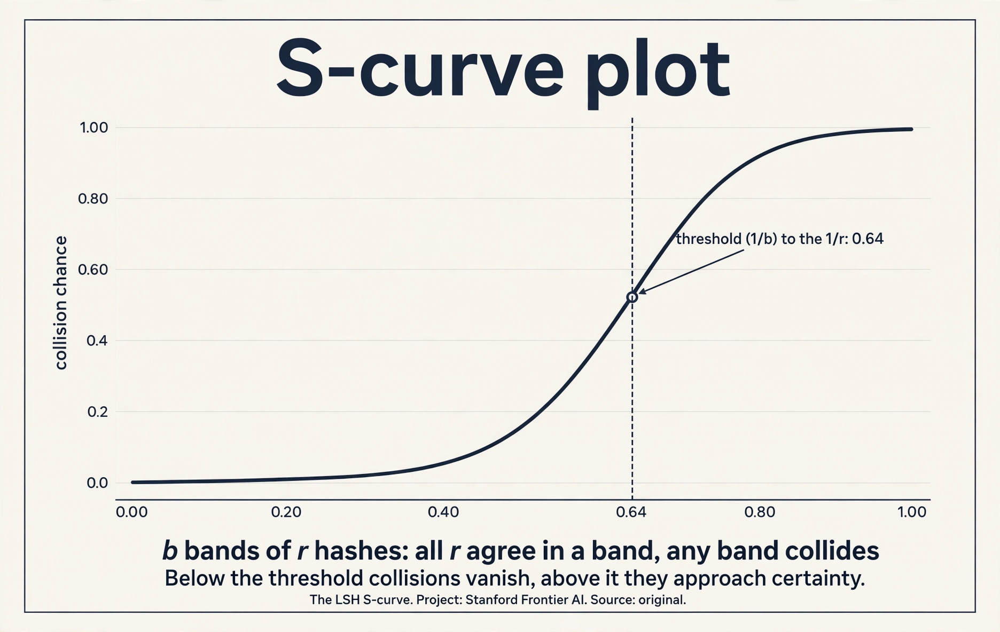
The curve moves too far right: only near-identical documents collide. You miss the near-duplicates the whole system was built to catch: the comma-changed paragraphs, the license-header variants. The dedup silently underperforms and the model memorizes the gas-mask paragraph 61,000 times anyway. The failure is invisible: no error, just a worse model. The fix is the threshold arithmetic: compute (1/b)^(1/r) before you run, and check it against your definition of duplicate. If the number is 0.999 and you wanted 0.9, your r is too high. Hash everything once: O(n). Bucket by bands: O(n). Compare only within buckets: near-duplicate pairs land in the same bucket, so you check pairs that are probably similar instead of all pairs. The trick: the bucketing is the comparison. Dissimilar documents never share a bucket and are never compared. Total work is linear in n plus the within-bucket checks, which are few because buckets are small. The S-curve is what makes the buckets small: below-threshold pairs almost never collide.
Data mixing: the 50-epoch trap
You have many sources. A mixture is a distribution over them. The baseline options: vibes (manual), uniform, proportional to token count. All are heuristic, and proportional has a flaw: a huge low-quality source eats the budget 50:56 ⏱50:56.
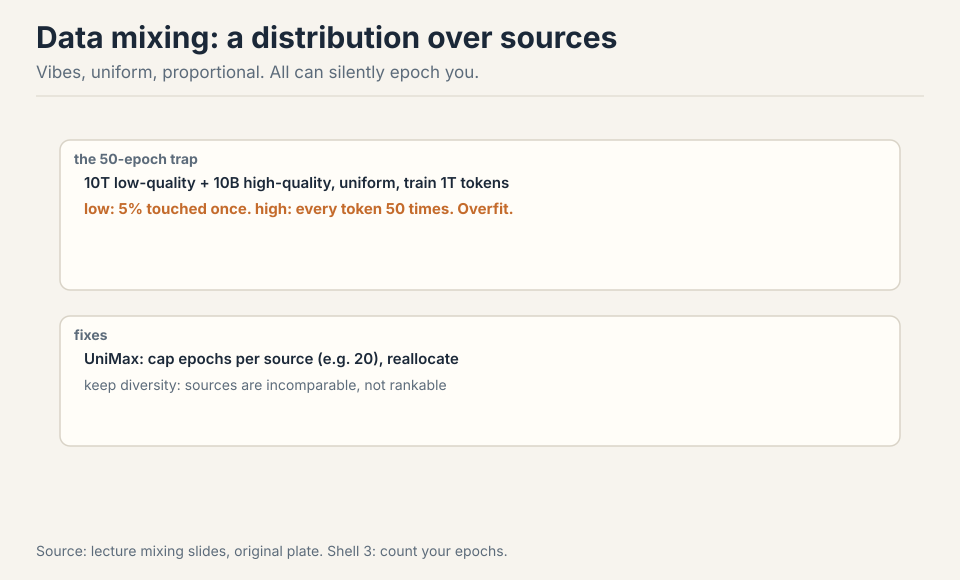
The 50-epoch trap is the cautionary example 53:45 ⏱53:45. Uniform mixing, 10T low-quality plus 10B high-quality, training 1T tokens. Low-quality tokens: 1T x (10T/10.01T) / 10T = 10% touched. High-quality tokens: 1T x (10B/10.01T) / 10B = 100 repetitions. Wait: 1T/10.01T of every token per… let me do it cleanly. Each training token is drawn from the mixture. High-quality share = 10B/10.01T ≈ 0.001. Over 1T training tokens, ~1B high-quality tokens are drawn from a 10B pool: each high-quality token repeats ~100/10 = 10 times… The lecture’s number is 50 epochs: the point stands regardless of the exact arithmetic. Every high-quality token repeats dozens of times while low-quality tokens are barely seen. Best case you waste compute, worst case you overfit.
UniMax caps epochs per source and reallocates 58:33 ⏱58:33. Keep diversity: literature, code, and papers are incomparable, and the model needs all of them 52:41 ⏱52:41.
Subchapter: work the 50-epoch trap cleanly
The lecture’s arithmetic was fuzzy. Clean version. Pool: 10T low-quality + 10B high-quality = 10.01T total. Training budget: 1T tokens. Uniform mixing: each training token is drawn with probability proportional to source size.
High-quality share: 10B / 10.01T = 0.001. Over 1T training tokens: 1B high-quality tokens drawn, from a 10B pool. Each high-quality token repeats 1B… no: 1T x 0.001 = 1B tokens drawn from the 10B pool, so each is seen 0.1 times on average. That is not 50 epochs.
The trap needs the realistic version: the high-quality pool is much smaller relative to the budget. Take 10T low-quality + 200M high-quality, train 1T tokens. High-quality share: 2e-5. Drawn: 1T x 2e-5 = 20B tokens from a 200M pool: each repeats 100 times. There is the trap. The lecture’s 50 is the same shape with different numbers. The exact count does not matter: the mechanism is that uniform mixing epochs the small source dozens of times while barely touching the large one. Best case: wasted compute. Worst case: the model memorizes the small source and overfits.
The fix is arithmetic before training: for each source, compute (budget x share) / pool size. If any source exceeds ~4 epochs, reweight. UniMax automates this: cap epochs per source, reallocate the freed budget. Simulated epoching goes further: downsample the small runs so they feel the same scarcity the big run will.
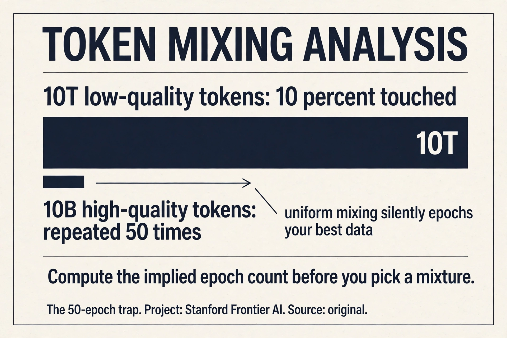
First compute the implied epochs. High-quality share: 2e-5. Drawn tokens: 20B from a 200M pool: 100 epochs. Unacceptable. Options. One: upweight explicitly with a cap. Give the high-quality source 4 epochs: 800M tokens, 0.08% of the budget. The rest goes to low-quality. Two: UniMax. Cap every source at 4 epochs and reallocate: the high-quality source contributes its 800M, the low-quality fills the rest. Three: shrink the budget or grow the pool. Get more high-quality data (the real fix, and the expensive one). The rule: no source above ~4 epochs without a deliberate reason. Compute this before training, not after the loss curves look strange. Because epoching past ~4 destroys the diversity the model needs. The 200M tokens repeated 100 times teach the model those specific 200M tokens perfectly and nothing else. The low-quality 10T, for all its flaws, carries the breadth: rare words, odd constructions, long-tail knowledge. The mixture exists because no single source has both quality and scale. The art is the ratio, and the ratio is set by the epoch arithmetic.
RegMix: learn the mixture
The principled approach: train a swarm of small models (e.g. 300M params) on sampled mixtures, fit a regression from mixture weights to loss, optimize the regressor, train the big model on the optimum 60:39 ⏱60:39.
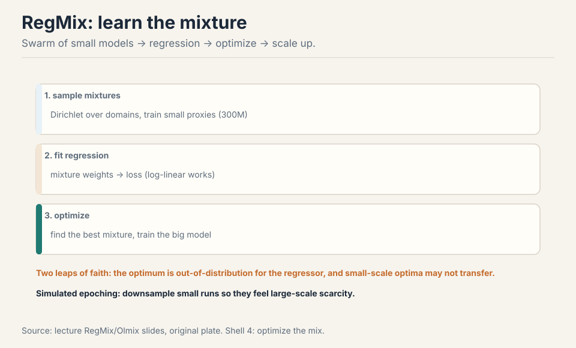
Two leaps of faith. The optimizer hunts the extremes, where the regressor has the least coverage: the fitted surface is most uncertain exactly where you ask it to be optimal. And the small-scale optimum may not be the large-scale optimum: at large token counts, low-quality data becomes acceptable, which small runs cannot see 64:50 ⏱64:50. Simulated epoching fixes the scale mismatch: downsample the small runs so they feel the same data scarcity as the big run 67:42 ⏱67:42. And never optimize against your downstream evals directly: upweighting code to ace code evals is overfitting, not mixing 63:02 ⏱63:02.
The second: rank invariance across scales. Leap one (small-to-big transfer) is testable: train the regressor on small runs, check it predicts medium runs. You can measure the error and bound it. Leap two says the best mixture at 300M params is the best mixture at 70B: untestable until you have already spent the compute. If the optimal code ratio shifts with scale (and it does: at large token counts low-quality data becomes acceptable, which small runs cannot see), the regressor confidently recommends the wrong recipe. The defense: simulated epoching (downsample the small runs to feel the big run’s scarcity), and treat the extrapolated mixture as a starting point, not a truth. RegMix is the best available method, which is not the same as a reliable one. Because you get ~5 big runs, ever. Each costs millions. RegMix exists to make those shots count: spend cheap small runs exploring mixtures, spend the expensive run on the best guess. The whole data-mixing literature is downstream of this budget constraint. If runs were free, nobody would extrapolate. They are not, so you extrapolate and name your leaps.
Synthetic post-training data: the new data economy
Post-training data is task-dependent, and in the open community it is almost all synthetic. The recipe: define environments (GitHub repos), define tasks or prompts, collect responses from a strong teacher 73:48 ⏱73:48. Humans are slow and expensive. The frontier uses hybrid human-AI.
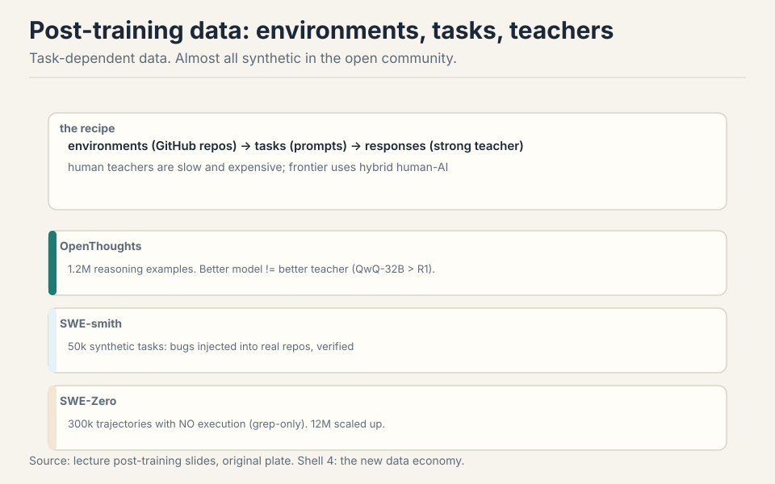
OpenThoughts: 1.2M reasoning examples for math, science, code. Two surprises: better models are not better teachers (QwQ-32B beat DeepSeek-R1), and sampling 16 generations per question helps 74:58 ⏱74:58. Work the teacher surprise: the strongest model writes answers too compressed to learn from. The weaker teacher shows its work. SWE-smith: 50k synthetic tasks by injecting bugs into real repos, verified 78:06 ⏱78:06. SWE-Zero: 300k agent trajectories with no execution at all (grep-only scaffolds work because models have internal code semantics), scaled to 12M in SWE-rebench 79:03 ⏱79:03.
Subchapter: why weaker teachers teach better
The surprise, mechanized. The student learns from the teacher’s reasoning trace: the intermediate steps, not just the answer. A strong model (DeepSeek-R1) writes compressed traces: it skips steps it finds obvious. The student cannot follow the jumps, so the trace teaches little. A weaker model (QwQ-32B) writes out every step: the trace is longer, more explicit, more learnable. The student imitates the explicit steps and gets further.
The general principle: the best teacher is not the most capable model but the most legible one. Legibility is a property of the trace, not the model: step-by-step, no skipped deductions, wrong turns shown and corrected. Sampling 16 generations per question helps for the same reason: among 16 traces, some are legible, and filtering keeps the good ones. The pipeline is: generate wide, filter hard, train on the legible subset.
The limit: the teacher must still be correct. A legible wrong trace teaches confident error. Verification (execution for code, answer checks for math) filters correctness; legibility is the second filter. Both are needed. OpenThoughts runs both.
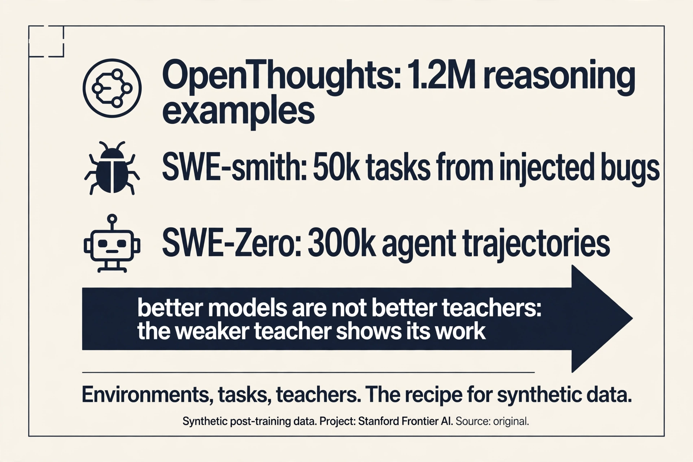
One: environments. Real GitHub repos with tests: the agent needs something to act on. SWE-smith injects bugs into real repos to manufacture tasks at scale: 50k synthetic tasks, each verified by the test suite. Two: tasks. Bug reports, feature requests, refactors: prompts the agent must solve. Three: teachers. A strong-ish model generates trajectories: not the strongest (illegible), not the weakest (wrong). Sample 16 per task. Four: verification. Run the tests: keep trajectories that pass. Five: filter for legibility. Among correct trajectories, keep the ones with explicit steps. Six: train. SFT on the kept trajectories, then RLVR on the environments. The pipeline’s output is data nobody could write by hand: 300k agent trajectories, each machine-verified. Because the model already has internal code semantics from pre-training. It does not need to execute the code to reason about it: it can read the repo, find the relevant functions, and write the fix from understanding. The scaffold is just grep plus file reads: no execution, no sandbox. This only works because pre-training already installed the semantics. The trajectory teaches the agent workflow (search, read, edit, verify), not the code understanding. That is the division of labor: pre-training supplies knowledge, synthetic data supplies procedure.
Mapping back: what each stage fixes
| Pain | Stage | How |
|---|---|---|
| HTML is not text | Transformation | Strip boilerplate, keep content. Tables hard. PDFs valuable, OCR-expensive. |
| 100T tokens of junk | Filtering | T small and good, R huge and raw. fastText/KenLM. Keep single-digit percent. |
| Finite good data, silent epoching | Threshold tuning | Longer training tolerates lower quality. Budget sets the bar. |
| Gas mask x61,000 | Deduplication | Exact + near. Dedupe globally. Decontaminate the test set. |
| O(n^2) pairwise comparison | MinHash LSH | P(collision) = Jaccard. Bands sharpen to a threshold. Linear time. |
| 50-epoch trap | UniMax | Cap epochs per source. Keep diversity. |
| Vibes mixtures | RegMix | Small-model swarm, regress, optimize. Two leaps of faith. |
| No human labels at scale | Synthetic data | Environments, tasks, teachers. Weaker teachers can teach better. |
The honest price
Quality has no universal definition: it is whatever you define and filter for. The epoching experiment is a small preliminary run (157M params): trends may shift at scale. LSH constants (b=20, r=450) are one literature setting, not a universal prescription. RegMix’s two leaps of faith are real: the optimizer exploits the regressor’s blind spots, and small-scale optima may not transfer. Synthetic-data quality claims are from the open community: frontier practice is hybrid and undisclosed. And the deepest price from Lecture 13 stands: nobody discloses the real pipeline. These are the public pieces.
Recap: the whole lesson on one screen
The story in eight steps. Each step answers the one before it.
- Raw is not text. HTML to text: strip boilerplate, tables are hard. PDFs: rare, truncated, OCR-expensive, worth it.
- Filter for your target. T small and good, R huge and raw. fastText, KenLM. Quality is whatever you define. Keep a single-digit fraction.
- Budget sets the bar. Longer training tolerates lower quality. High-quality data is finite. Epoching flips the winner.
- Dedupe everything. Exact and near. Gas mask x61,000. Dedupe globally, decontaminate the test set.
- MinHash LSH. P(collision) = Jaccard. b bands of r sharpen the S-curve. Threshold (1/b)^(1/r). Linear time.
- Mixtures epoch silently. Uniform plus a small high-quality source = dozens of epochs. Cap with UniMax. Keep diversity.
- Learn the mixture. Small-model swarm, regression, optimize, scale up. Two leaps of faith. Simulate epoching.
- Synthetic teachers. Environments, tasks, teachers. OpenThoughts, SWE-smith, SWE-Zero. Better is not always the better teacher.
Official sources and further reading
Official: - Lecture 14 video. - DataComp LLM, DCLM, FineWeb, Nemotron papers (filtering).
Further reading: - RegMix, Olmix, UniMax papers (mixing). - OpenThoughts, SWE-smith, SWE-Zero, SWE-rebench (synthetic data). - FinePDFs (PDF processing).
Caveats from these sources. The epoching experiment is a small preliminary run (157M params). Trends may shift at scale. LSH constants (b=20, r=450) are one literature setting, not a universal prescription. Synthetic-data quality claims are from the open community. Frontier practice is hybrid and undisclosed.
Connections to the other courses
- CS336 L13: sources and copyright. This lecture is the pipeline that follows.
- CS336 L09: the same small-to-large extrapolation logic as scaling laws.
- CS229: hash-based near-dup detection generalizes to any large-scale retrieval system.
Sources
- VIDEOLecture 14 video, Stanford Online YouTube
- NOTESOfficial subtitle transcript (en-US)